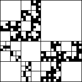
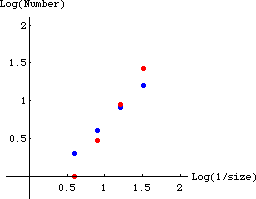
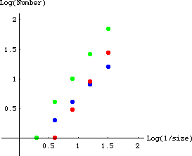
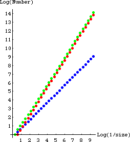

| 8. One approach is to count the number of missing squares of size 1/4,
1/8, 1/16, and 1/32 in the lower left, lower right,
and upper left corners.
The red dots represent the lower right and upper left
corners; the blue dots the lower left corner.
These distributions are different from one another, so the entire distribution
cannot be self-similar. |
|
 |
| size | lower left | lower right | upper left |
| 1/4 | 2 | 1 | 1 |
| 1/8 | 4 | 3 | 3 |
| 1/16 | 8 | 9 | 9 |
| 1/32 | 16 | 27 | 27 |
|
 |
|
| |
| Another approach is to count the missing squares for the
whole shape
and compare that to the one of the corners. |
| size | lower left | lower right | whole shape |
| 1/2 | 0 | 0 | 1 |
| 1/4 | 2 | 1 | 4 |
| 1/8 | 4 | 3 | 10 |
| 1/16 | 8 | 9 | 26 |
| 1/32 | 16 | 27 | 70 |
|
 |
|
| Certainly, the blue and
green graphs are different, so the shape does not
represent a self-similar distribution. |
| If we continue the pattern begun in this picture, we see the number of holes of
size 1/2n is 2n-1 for the
lower left corner, 3n-1 for the
lower right and upper
left corners, and consequently 2n-1 + 2*(3n-1)
for the entire shape. In the limit, the contribution
to the whole shape of the lower left corner is negligible compared with those of the
lower right and upper left corners. The whole shape has a distribution similar to
that of these corners, but not to that of the lower left corner. |
|  |